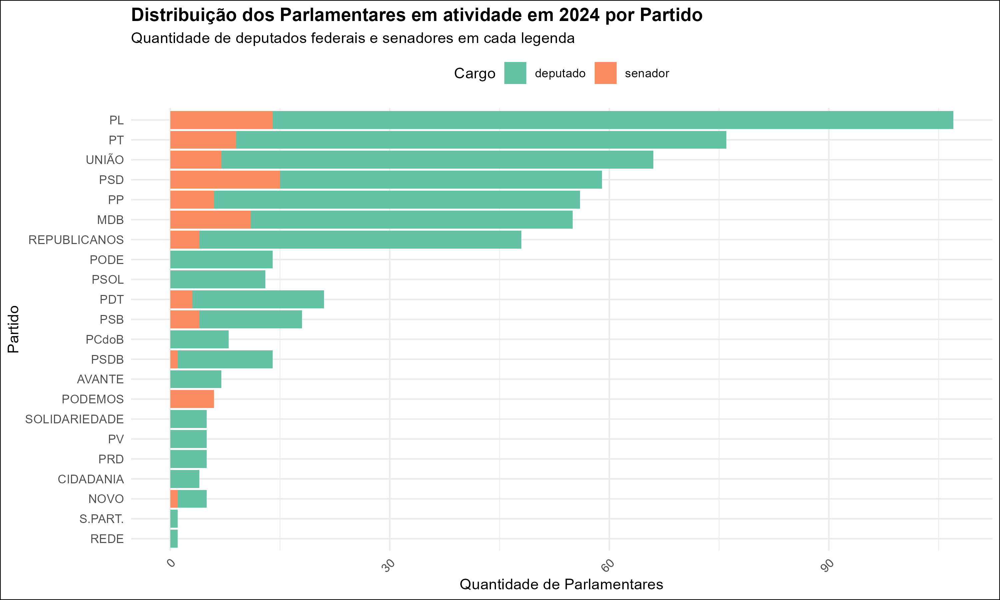
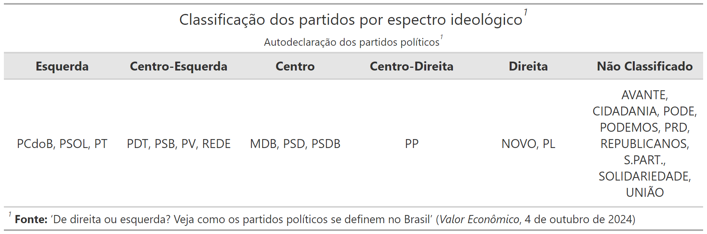
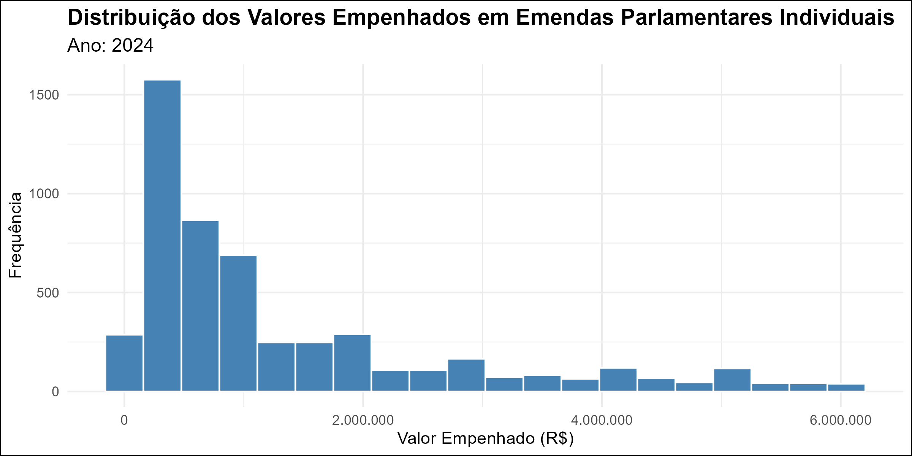

coluna 1
coluna 2
Os dados utilizados neste estudo foram acessados em 06/01/2025 e provêm de:
- Portal da Transparência
- Emendas parlamentares individuais de 2024, disponibilizadas pelos ministérios e órgãos do Poder Executivo Federal
- Portais da Câmara e Senado
- Dados cadastrais dos parlamentares da legislatura 2023-2027
- Valor Econômico (04/10/2024)
- Classificação ideológica dos partidos políticos baseada em autodeclarações das siglas
- Tabela de Emendas:
- Total de 17 colunas originais, incluindo detalhes orçamentários e administrativos (ex:
Numero_Emenda,Plano_Orcamentario,Valor_Restos_Pagar_Inscritos)
- Total de 17 colunas originais, incluindo detalhes orçamentários e administrativos (ex:
- Tabela de Deputados:
- Total de 9 colunas originais, incluindo informações administrativas (ex:
Endereco,Gabinete,Telefone)
- Total de 9 colunas originais, incluindo informações administrativas (ex:
- Tabela de Senadores:
- Total de 10 colunas originais, incluindo dados pessoais e de contato (ex:
Data_Nascimento,Chefe_Gabinete)
- Total de 10 colunas originais, incluindo dados pessoais e de contato (ex:
- Tabela de Espectros Ideológicos:
- Duas colunas:
PartidoeEspectro
- Duas colunas:
Ano: Ano de referência da emenda parlamentar (2024)Autor_Emenda: Nome completo do parlamentar autor da emendaFuncao: Área de aplicação da emenda (ex: Saúde, Educação, Infraestrutura)Valor_Empenhado: Valor em reais destinado à emendaNome_Parlamentar: Nome do parlamentar conforme registrado na Câmara/SenadoPartido: Sigla do partido ao qual o parlamentar está filiadoEspectro: Classificação ideológica do partido (Esquerda, Centro ou Direita) segundo autodeclaração